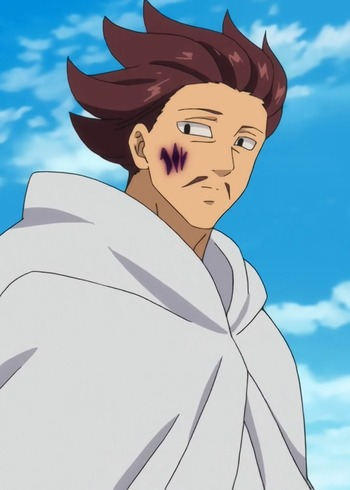
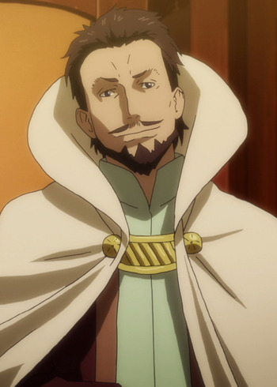

|
Michel Lemon |
- Full Metal Panic! The Invisible Victory
|
Michel Lemon is a member of DGSE - the intelligence service of French Government. He has knowledge of medicine and first-aide. He can be sociable and sometimes a drinker. |
 |
Mifune |
|
Mifune is the bodyguard of the witch Angela Leon. He has a stoic nature. Mifune has a strong love for children. |
|  |
Monspeet |
- The Seven Deadly Sins: Revival of The Commandments
- The Seven Deadly Sins: Wrath of the Gods
|
Monspeet is an elite of the Demon Clan, serving directly under Demo King as the Reticence of the Ten Commandments. He is a gentleman fo sorts for a demon and hates rude and ill-mannered people. He is always being by her side and catering to her needs. He translate her quick and crude phrases with detail and shows a deep care by staying by her whenever he can. He has a slight preferences for seeing Derieri in a cute dress and seems styling her. He is not one for immediate and would prefer to most to surrender rather than fight. |
 |
Silver |
|
Silver was Ice Devil Slayer. He is the father of Gray Fullbuster. Silver appears to be a jovial, somewhat playful and a very calm man. |
|  |
Vesta |
- That Time I Got Reincarnated as a Slime
|
Vesta is a former minister of Dwargon and currently the lead reseacher of Tempest. He is a reliable and useful person. He no longer has a mellowed out or sharp personality. |